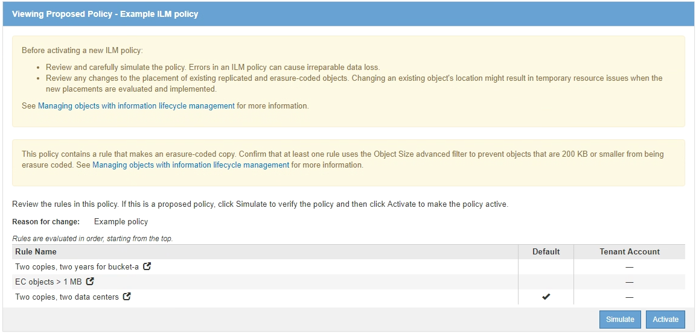
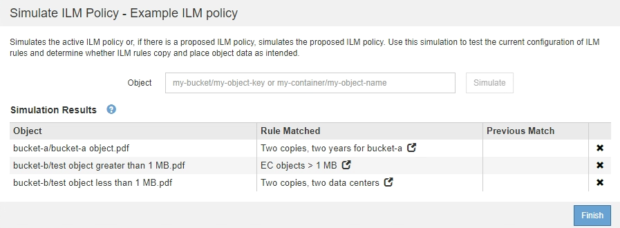
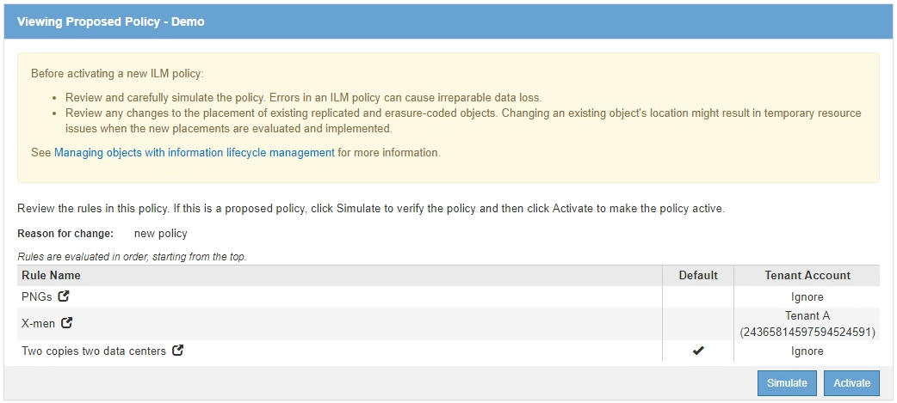
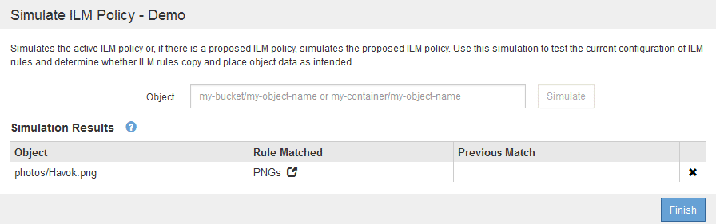
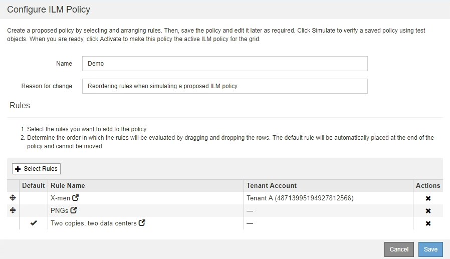
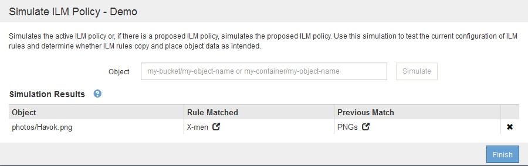
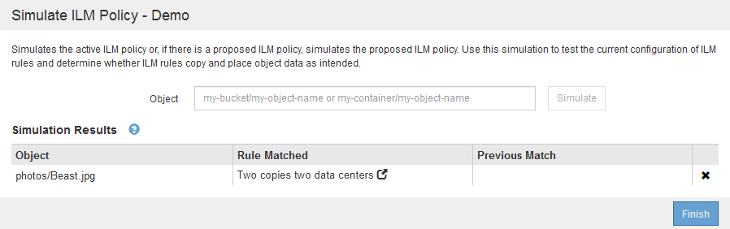
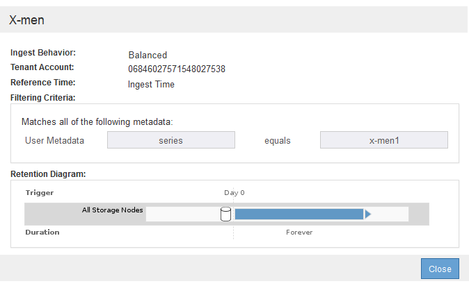
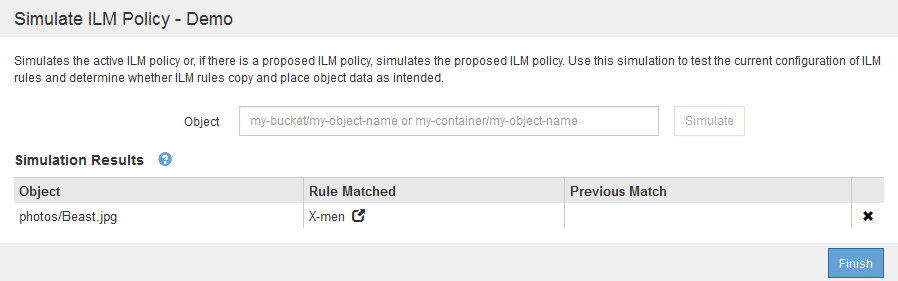

Richiedi modifiche alla documentazione
Richiedi modifiche alla documentazione Modifica questa pagina
Modifica questa pagina Scopri come collaborare
Scopri come collaborareEsempi di simulazione delle policy ILM
Collaboratori
Questi esempi mostrano come è possibile verificare le regole ILM simulando il criterio ILM prima di attivarlo.
Esempio 1: Verifica delle regole durante la simulazione di una policy ILM proposta
Questo esempio mostra come verificare le regole quando si simula un criterio proposto.
In questo esempio, la policy ILM di esempio viene simulata rispetto agli oggetti acquisiti in due bucket. La policy include tre regole, come segue:
-
La prima regola, due copie, due anni per bucket-a, si applica solo agli oggetti nel bucket-a.
-
La seconda regola, menu:EC objects[1 MB], si applica a tutti i bucket, ma ai filtri sugli oggetti superiori a 1 MB.
-
La terza regola è quella predefinita e non include alcun filtro.

-
Dopo aver aggiunto le regole e salvato il criterio, fare clic su simulate.
Viene visualizzata la finestra di dialogo Simula policy ILM.
-
Nel campo oggetto, immettere il bucket S3/object-key o il container Swift/object-name per un oggetto di test e fare clic su simulate.
Vengono visualizzati i risultati di Simulation, che mostrano quale regola del criterio corrisponde a ciascun oggetto testato.

-
Verificare che ogni oggetto sia stato associato alla regola corretta.
In questo esempio:
-
bucket-a/bucket-a object.pdfcorrisponde correttamente alla prima regola, che filtra sugli oggetti inbucket-a. -
bucket-b/test object greater than 1 MB.pdfè inbucket-b, quindi non corrisponde alla prima regola. Al contrario, è stata associata correttamente dalla seconda regola, che filtra su oggetti superiori a 1 MB. -
bucket-b/test object less than 1 MB.pdfi filtri non corrispondono alle prime due regole, quindi verranno posizionati in base alla regola predefinita, che non include filtri.
-
Esempio 2: Riordinamento delle regole durante la simulazione di una policy ILM proposta
Questo esempio mostra come è possibile riordinare le regole per modificare i risultati durante la simulazione di un criterio.
In questo esempio, viene simulata la policy Demo. Questo criterio, che ha lo scopo di trovare oggetti con metadati utente series=x-men, include tre regole, come segue:
-
La prima regola, PNG, filtra i nomi delle chiavi che terminano
.png. -
La seconda regola, X-MEN, si applica solo agli oggetti per il tenant A e ai filtri per
series=x-menmetadati dell’utente. -
L’ultima regola, due copie due data center, è la regola predefinita, che corrisponde a tutti gli oggetti che non corrispondono alle prime due regole.

-
Dopo aver aggiunto le regole e salvato il criterio, fare clic su simulate.
-
Nel campo oggetto, immettere il bucket S3/object-key o il container Swift/object-name per un oggetto di test e fare clic su simulate.
Vengono visualizzati i risultati di Simulation, che indicano che il
Havok.pngL’oggetto è stato associato dalla regola PNG.
Tuttavia, la regola che il
Havok.pngL’oggetto doveva essere testato come la regola X-MEN. -
Per risolvere il problema, riordinare le regole.
-
Fare clic su fine per chiudere la pagina Simula policy ILM.
-
Fare clic su Edit (Modifica) per modificare il criterio.
-
Trascinare la regola X-MEN all’inizio dell’elenco.

-
Fare clic su Save (Salva).
-
-
Fare clic su simulate.
Gli oggetti precedentemente testati vengono rivalutati in base alla policy aggiornata e vengono visualizzati i risultati della nuova simulazione. Nell’esempio, la colonna Rule Matched mostra che il
Havok.pngL’oggetto ora corrisponde alla regola dei metadati X-MEN, come previsto. La colonna Previous Match (confronto precedente) mostra che la regola PNG ha trovato corrispondenza con l’oggetto nella simulazione precedente.

Se si rimane nella pagina Configura criteri, è possibile simulare nuovamente un criterio dopo aver apportato modifiche senza dover immettere nuovamente i nomi degli oggetti di test.
Esempio 3: Correzione di una regola durante la simulazione di una policy ILM proposta
Questo esempio mostra come simulare una policy, correggere una regola nella policy e continuare la simulazione.
In questo esempio, viene simulata la policy Demo. Questo criterio è destinato a trovare gli oggetti che hanno series=x-men metadati dell’utente. Tuttavia, si sono verificati risultati imprevisti durante la simulazione di questa policy rispetto a. Beast.jpg oggetto. Invece di corrispondere alla regola dei metadati X-MEN, l’oggetto corrisponde alla regola predefinita, due copie di due data center.

Quando un oggetto di test non corrisponde alla regola prevista nel criterio, è necessario esaminare ciascuna regola del criterio e correggere eventuali errori.
-
Per ogni regola del criterio, visualizzare le impostazioni facendo clic sul nome della regola o sull’icona ulteriori dettagli in qualsiasi finestra di dialogo in cui viene visualizzata la regola.
-
Esaminare l’account tenant della regola, il tempo di riferimento e i criteri di filtraggio.
In questo esempio, i metadati per la regola X-MEN includono un errore. Il valore dei metadati è stato immesso come “x-men1” invece di “x-men”.

-
Per risolvere l’errore, correggere la regola come segue:
-
Se la regola fa parte del criterio proposto, è possibile clonarla o rimuoverla dal criterio e modificarla.
-
Se la regola fa parte del criterio attivo, è necessario clonarla. Non è possibile modificare o rimuovere una regola dal criterio attivo.
Opzione Descrizione Clonare la regola
-
Selezionare ILM > regole.
-
Selezionare la regola errata e fare clic su Clone.
-
Modificare le informazioni non corrette e fare clic su Salva.
-
Selezionare ILM > Policy.
-
Selezionare la policy proposta e fare clic su Modifica.
-
Fare clic su Seleziona regole.
-
Selezionare la casella di controllo per la nuova regola, deselezionare la casella di controllo per la regola originale e fare clic su Applica.
-
Fare clic su Save (Salva).
Modifica della regola
-
Selezionare la policy proposta e fare clic su Modifica.
-
Fare clic sull’icona di eliminazione Per rimuovere la regola errata, quindi fare clic su Salva.
-
Selezionare ILM > regole.
-
Selezionare la regola errata e fare clic su Modifica.
-
Modificare le informazioni non corrette e fare clic su Salva.
-
Selezionare ILM > Policy.
-
Selezionare la policy proposta e fare clic su Modifica.
-
Selezionare la regola corretta, fare clic su Applica e fare clic su Salva.
-
-
-
Eseguire nuovamente la simulazione.
Poiché si è allontanati dalla pagina ILM Policies per modificare la regola, gli oggetti precedentemente immessi per la simulazione non vengono più visualizzati. È necessario immettere nuovamente i nomi degli oggetti. In questo esempio, la regola corretta X-men corrisponde ora a.
Beast.jpgoggetto basato suseries=x-menmetadati dell’utente, come previsto.